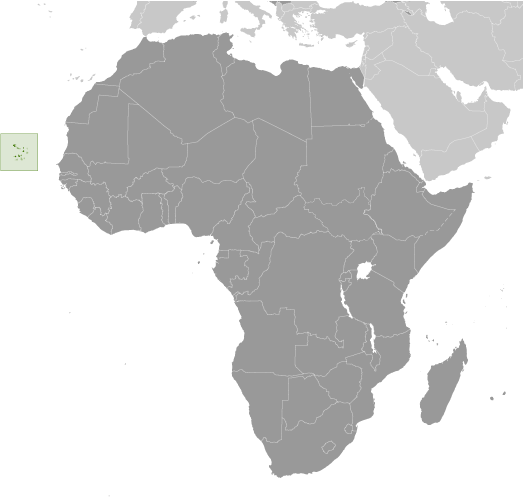
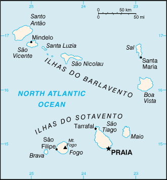
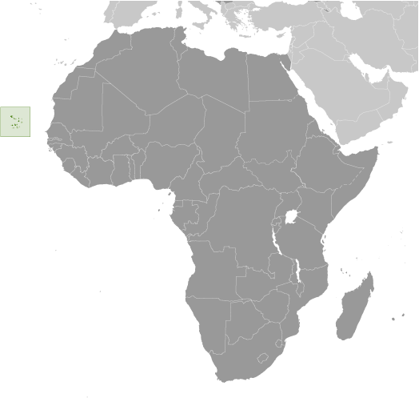
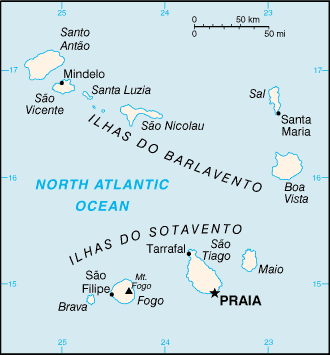

Africa :: CABO VERDE
Introduction :: CABO VERDE
-
The uninhabited islands were discovered and colonized by the Portuguese in the 15th century; Cabo Verde subsequently became a trading center for African slaves and later an important coaling and resupply stop for whaling and transatlantic shipping. The fusing of European and various African cultural traditions is reflected in Cabo Verde’s Crioulo language, music, and pano textiles. Following independence in 1975, and a tentative interest in unification with Guinea-Bissau, a one-party system was established and maintained until multi-party elections were held in 1990. Cabo Verde continues to sustain one of Africa's most stable democratic governments. Repeated droughts during the second half of the 20th century caused significant hardship and prompted heavy emigration. As a result, Cabo Verde's expatriate population is greater than its domestic one. Most Cabo Verdeans have both African and Portuguese antecedents. Cabo Verde’s population descends from its first permanent inhabitants in the late 15th-century – a preponderance of West African slaves, a small share of Portuguese colonists, and even fewer Italians, Spaniards, and Portuguese Jews. Among the nine inhabited islands, population distribution is variable. Islands in the east are very dry and are only sparsely settled to exploit their extensive salt deposits. The more southerly islands receive more precipitation and support larger populations, but agriculture and livestock grazing have damaged their soil fertility and vegetation. For centuries, the country’s overall population size has fluctuated significantly, as recurring periods of famine and epidemics have caused high death tolls and emigration.
Geography :: CABO VERDE
-
Western Africa, group of islands in the North Atlantic Ocean, west of Senegal16 00 N, 24 00 WAfricatotal: 4,033 sq kmland: 4,033 sq kmwater: 0 sq kmcountry comparison to the world: 176slightly larger than Rhode Island0 km965 kmmeasured from claimed archipelagic baselinesterritorial sea: 12 nmcontiguous zone: 24 nmexclusive economic zone: 200 nmtemperate; warm, dry summer; precipitation meager and erraticsteep, rugged, rocky, volcanicmean elevation: NAelevation extremes: lowest point: Atlantic Ocean 0 mhighest point: Mt. Fogo 2,829 m (a volcano on Fogo Island)salt, basalt rock, limestone, kaolin, fish, clay, gypsumagricultural land: 18.6%arable land 11.7%; permanent crops 0.7%; permanent pasture 6.2%forest: 21%other: 60.4% (2011 est.)35 sq km (2012)among the nine inhabited islands, population distribution is variable; islands in the east are very dry and are only sparsely settled to exploit their extensive salt deposits; the more southerly islands receive more precipitation and support larger populations, but agriculture and livestock grazing have damaged the soil fertility and vegetation; approximately half of the population lives on Sao Tiago Island, which is the location of the capital of Praia; Mindelo, on the northern island of Sao Vicente, also has a large urban populationprolonged droughts; seasonal harmattan wind produces obscuring dust; volcanically and seismically activevolcanism: Fogo (2,829 m), which last erupted in 1995, is Cabo Verde's only active volcanosoil erosion; deforestation due to demand for firewood; water shortages; desertification; environmental damage has threatened several species of birds and reptiles; illegal beach sand extraction; overfishingparty to: Biodiversity, Climate Change, Climate Change-Kyoto Protocol, Desertification, Endangered Species, Environmental Modification, Hazardous Wastes, Law of the Sea, Marine Dumping, Ozone Layer Protection, Ship Pollution, Wetlandssigned, but not ratified: none of the selected agreementsstrategic location 500 km from west coast of Africa near major north-south sea routes; important communications station; important sea and air refueling site
People and Society :: CABO VERDE
-
560,899 (July 2017 est.)country comparison to the world: 173noun: Cabo Verdean(s)adjective: Cabo VerdeanCreole (mulatto) 71%, African 28%, European 1%Portuguese (official), Crioulo (a blend of Portuguese and West African words)Roman Catholic 77.3%, Protestant 4.6% (includes Church of the Nazarene 1.7%, Adventist 1.5%, Assembly of God 0.9%, Universal Kingdom of God 0.4%, and God and Love 0.1%), other Christian 3.4% (includes Christian Rationalism 1.9%, Jehovah's Witness 1%, and New Apostolic 0.5%), Muslim 1.8%, other 1.3%, none 10.8%, unspecified 0.7% (2010 est.)Cabo Verde’s population descends from its first permanent inhabitants in the late 15th-century – a preponderance of West African slaves, a small share of Portuguese colonists, and even fewer Italians, Spaniards, and Portuguese Jews. Over the centuries, the country’s overall population size has fluctuated significantly, as recurring periods of famine and epidemics have caused high death tolls and emigration.Labor migration historically reduced Cabo Verde’s population growth and still provides a key source of income through remittances. Expatriates probably outnumber Cabo Verde’s resident population, with most families having a member abroad. Cabo Verdeans have settled in the US, Europe, Africa, and South America. The largest diaspora community in New Bedford, Massachusetts, dating to the early 1800s, is a byproduct of the transatlantic whaling industry. Cabo Verdean men fleeing poverty at home joined the crews of US whaling ships that stopped in the islands. Many settled in New Bedford and stayed in the whaling or shipping trade, worked in the textile or cranberry industries, or operated their own transatlantic packet ships that transported compatriots to the US. Increased Cabo Verdean emigration to the US coincided with the gradual and eventually complete abolition of slavery in the archipelago in 1878.During the same period, Portuguese authorities coerced Cabo Verdeans to go to Sao Tome and Principe and other Portuguese colonies in Africa to work as indentured laborers on plantations. In the 1920s, when the US implemented immigration quotas, Cabo Verdean emigration shifted toward Portugal, West Africa (Senegal), and South America (Argentina). Growing numbers of Cabo Verdean labor migrants headed to Western Europe in the 1960s and 1970s. They filled unskilled jobs in Portugal, as many Portuguese sought out work opportunities in the more prosperous economies of northwest Europe. Cabo Verdeans eventually expanded their emigration to the Netherlands, where they worked in the shipping industry. Migration to the US resumed under relaxed migration laws. Cabo Verdean women also began migrating to southern Europe to become domestic workers, a trend that continues today and has shifted the gender balance of Cabo Verdean emigration.Emigration has declined in more recent decades due to the adoption of more restrictive migration policies in destination countries. Reduced emigration along with a large youth population, decreased mortality rates, and increased life expectancies, has boosted population growth, putting further pressure on domestic employment and resources. In addition, Cabo Verde has attracted increasing numbers of migrants in recent decades, consisting primarily of people from West Africa, Portuguese-speaking African countries, Portugal, and China. Since the 1990s, some West African migrants have used Cabo Verde as a stepping stone for illegal migration to Europe.0-14 years: 29.13% (male 82,157/female 81,227)15-24 years: 20.11% (male 56,401/female 56,391)25-54 years: 39.64% (male 108,081/female 114,234)55-64 years: 5.94% (male 14,547/female 18,761)65 years and over: 5.19% (male 11,012/female 18,088) (2017 est.)total dependency ratio: 55.4youth dependency ratio: 48.4elderly dependency ratio: 6.9potential support ratio: 14.4 (2015 est.)total: 25.4 yearsmale: 24.6 yearsfemale: 26.2 years (2017 est.)country comparison to the world: 1551.33% (2017 est.)country comparison to the world: 8520 births/1,000 population (2017 est.)country comparison to the world: 796 deaths/1,000 population (2017 est.)country comparison to the world: 163-0.6 migrant(s)/1,000 population (2017 est.)country comparison to the world: 129among the nine inhabited islands, population distribution is variable; islands in the east are very dry and are only sparsely settled to exploit their extensive salt deposits; the more southerly islands receive more precipitation and support larger populations, but agriculture and livestock grazing have damaged the soil fertility and vegetation; approximately half of the population lives on Sao Tiago Island, which is the location of the capital of Praia; Mindelo, on the northern island of Sao Vicente, also has a large urban populationurban population: 66.8% of total population (2017)rate of urbanization: 1.8% annual rate of change (2015-20 est.)PRAIA (capital) 145,000 (2014)at birth: 1.03 male(s)/female0-14 years: 1.01 male(s)/female15-24 years: 1 male(s)/female25-54 years: 0.94 male(s)/female55-64 years: 0.75 male(s)/female65 years and over: 0.61 male(s)/femaletotal population: 0.94 male(s)/female (2016 est.)42 deaths/100,000 live births (2015 est.)country comparison to the world: 103total: 21.9 deaths/1,000 live birthsmale: 25.1 deaths/1,000 live birthsfemale: 18.6 deaths/1,000 live births (2017 est.)country comparison to the world: 75total population: 72.4 yearsmale: 70.1 yearsfemale: 74.8 years (2017 est.)country comparison to the world: 1492.24 children born/woman (2017 est.)country comparison to the world: 964.8% of GDP (2014)country comparison to the world: 1470.31 physicians/1,000 population (2011)2.1 beds/1,000 population (2010)improved:urban: 94% of populationrural: 87.3% of populationtotal: 91.7% of populationunimproved:urban: 6% of populationrural: 12.7% of populationtotal: 8.3% of population (2015 est.)improved:urban: 81.6% of populationrural: 54.3% of populationtotal: 72.2% of populationunimproved:urban: 1.4% of populationrural: 45.7% of populationtotal: 27.8% of population (2015 est.)0.8% (2016 est.)country comparison to the world: 482,800 (2016 est.)country comparison to the world: 114<100 (2016 est.)note: active local transmission of Zika virus by Aedes species mosquitoes has been identified in this country (as of August 2016); it poses an important risk (a large number of cases possible) among US citizens if bitten by an infective mosquito; other less common ways to get Zika are through sex, via blood transfusion, or during pregnancy, in which the pregnant woman passes Zika virus to her fetus (2016)11.8% (2016)country comparison to the world: 1345% of GDP (2013)country comparison to the world: 76definition: age 15 and over can read and writetotal population: 86.8%male: 91.7%female: 82% (2015 est.)total: 13 yearsmale: 13 yearsfemale: 13 years (2015)
Government :: CABO VERDE
-
conventional long form: Republic of Cabo Verdeconventional short form: Cabo Verdelocal long form: Republica de Cabo Verdelocal short form: Cabo Verdeetymology: the name derives from Cap-Vert (Green Cape) on the Senegalese coast, the westernmost point of Africa and the nearest mainland to the islandsparliamentary republicname: Praiageographic coordinates: 14 55 N, 23 31 Wtime difference: UTC-1 (4 hours ahead of Washington, DC, during Standard Time)22 municipalities (concelhos, singular - concelho); Boa Vista, Brava, Maio, Mosteiros, Paul, Porto Novo, Praia, Ribeira Brava, Ribeira Grande, Ribeira Grande de Santiago, Sal, Santa Catarina, Santa Catarina do Fogo, Santa Cruz, Sao Domingos, Sao Filipe, Sao Lourenco dos Orgaos, Sao Miguel, Sao Salvador do Mundo, Sao Vicente, Tarrafal, Tarrafal de Sao Nicolau5 July 1975 (from Portugal)Independence Day, 5 July (1975)history: previous 1981; latest effective 25 September 1992amendments: proposals require support of at least four-fifths of the active National Assembly membership; amendment drafts require sponsorship of at least one-third of the active Assembly membership; passage requires at least two-thirds majority vote by the Assembly membership; constitutional sections including those on national independence, form of government, political pluralism, suffrage, and human rights and liberties cannot be amended; revised 1995, 1999, 2010 (2017)civil law system of Portugalhas not submitted an ICJ jurisdiction declaration; accepts ICCt jurisdictioncitizenship by birth: nocitizenship by descent only: at least one parent must be a citizen of Cabo Verdedual citizenship recognized: yesresidency requirement for naturalization: 5 years18 years of age; universalchief of state: President Jorge Carlos FONSECA (since 9 September 2011)head of government: Prime Minister Ulisses CORREIA E. SILVA (since 22 April 2016)cabinet: Council of Ministers appointed by the president on the recommendation of the prime ministerelections/appointments: president directly elected by absolute majority popular vote in 2 rounds if needed for a 5-year term (eligible for a second term); election last held on 2 October 2016 (next to be held in 2021); prime minister nominated by the National Assembly and appointed by the presidentelection results: Jorge Carlos FONSECA reelected president; percent of vote - Jorge Carlos FONSECA (MPD) 74%, Albertino GRACA (independent) 23%, other 3%description: unicameral National Assembly or Assembleia Nacional (72 seats; members directly elected in multi-seat constituencies by proportional representation vote; members serve 5-year terms)elections: last held on 20 March 2016 (next to be held in 2021)election results: percent of vote by party MPD 54.5%, PAICV 38.2%, UCID 6.96%, Other 0.4%; seats by party - MPD 40, PAICV 29, UCID 3highest court(s): Supreme Court of Justice (consists of the chief justice and at least 7 judges and organized into civil, criminal, and administrative sections)judge selection and term of office: judge appointments - 1 by the president of the republic, 1 elected by the National Assembly, and 3 by the Superior Judicial Council (SJC), a 16-member independent body chaired by the chief justice and includes the attorney general, 8 private citizens, 2 judges, 2 prosecutors, the senior legal inspector of the Attorney General's office, and a representative of the Ministry of Justice; chief justice appointed by the president of the republic from among peers of the Supreme Court of Justice and in consultation with the SJC; judges appointed for lifesubordinate courts: appeals courts, first instance (municipal) courts; audit, military, and fiscal and customs courtsAfrican Party for Independence of Cabo Verde or PAICV [Janira Hopffer ALMADA]Democratic and Independent Cabo Verdean Union or UCID [Antonio MONTEIRO]Democratic Christian Party or PDC [Manuel RODRIGUES]Democratic Renovation Party or PRD [Victor FIDALGO]Movement for Democracy or MPD [Ulisses CORREIA E SILVA]Party for Democratic Convergence or PCD [Dr. Eurico MONTEIRO]Party of Work and Solidarity or PTS [Anibal MEDINA]Social Democratic Party or PSD [Joao ALEM]other: environmentalists; political pressure groupsACP, AfDB, AOSIS, AU, CD, CPLP, ECOWAS, FAO, G-77, IAEA, IBRD, ICAO, ICCt (signatory), ICRM, IDA, IFAD, IFC, IFRCS, ILO, IMF, IMO, Interpol, IOC, IOM, IPU, ITSO, ITU, ITUC (NGOs), MIGA, NAM, OIF, OPCW, UN, UNCTAD, UNESCO, UNIDO, Union Latina, UNWTO, UPU, WCO, WHO, WIPO, WMO, WTOchief of mission: Ambassador Carlos VEIGA (since 18 January 2017)chancery: 3415 Massachusetts Avenue NW, Washington, DC 20007telephone: [1] (202) 965-6820FAX: [1] (202) 965-1207consulate(s) general: Bostonchief of mission: Ambassador Donald L. HEFLIN (since 5 February 2015)embassy: Rua Abilio Macedo 6, Praiamailing address: C. P. 201, Praiatelephone: [238] 2-60-89-00FAX: [238] 2-61-13-55five unequal horizontal bands; the top-most band of blue - equal to one half the width of the flag - is followed by three bands of white, red, and white, each equal to 1/12 of the width, and a bottom stripe of blue equal to one quarter of the flag width; a circle of 10 yellow, five-pointed stars is centered on the red stripe and positioned 3/8 of the length of the flag from the hoist side; blue stands for the sea and the sky, the circle of stars represents the 10 major islands united into a nation, the stripes symbolize the road to formation of the country through peace (white) and effort (red)ten, five-pointed, yellow stars; national colors: blue, white, red, yellowname: "Cantico da Liberdade" (Song of Freedom)lyrics/music: Amilcar Spencer LOPES/Adalberto Higino Tavares SILVAnote: adopted 1996
Economy :: CABO VERDE
-
Cabo Verde’s economy is vulnerable to external shocks and depends on development aid, foreign investment, remittances, and tourism. The economy is service-oriented with commerce, transport, tourism, and public services accounting for about three-fourths of GDP. Tourism is the mainstay of the economy and depends on conditions in the euro-zone countries. Cabo Verde annually runs a high trade deficit financed by foreign aid and remittances from its large pool of emigrants; remittances as a share of GDP are one of the highest in Sub-Saharan Africa.Although about 40% of the population lives in rural areas, the share of food production in GDP is low. The island economy suffers from a poor natural resource base, including serious water shortages, exacerbated by cycles of long-term drought, and poor soil for growing food on several of the islands, requiring it to import most of what it consumes. The fishing potential, mostly lobster and tuna, is not fully exploited.Economic reforms are aimed at developing the private sector and attracting foreign investment to diversify the economy and mitigate high unemployment. The government’s elevated debt levels have limited its capacity to finance any shortfalls.$3.529 billion (2016 est.)$3.357 billion (2015 est.)$3.288 billion (2014 est.)note: data are in 2016 dollarscountry comparison to the world: 180$1.64 billion (2016 est.)3.8% (2016 est.)1% (2015 est.)0.6% (2014 est.)country comparison to the world: 67$6,600 (2016 est.)$6,500 (2015 est.)$6,500 (2014 est.)note: data are in 2016 dollarscountry comparison to the world: 15733.3% of GDP (2016 est.)33.8% of GDP (2015 est.)27.9% of GDP (2014 est.)country comparison to the world: 23household consumption: 54.3%government consumption: 17.6%investment in fixed capital: 33.9%investment in inventories: 0.2%exports of goods and services: 44.7%imports of goods and services: -50.7% (2016 est.)agriculture: 8.1%industry: 18.2%services: 73.7% (2016 est.)bananas, corn, beans, sweet potatoes, sugarcane, coffee, peanuts; fishfood and beverages, fish processing, shoes and garments, salt mining, ship repair3.2% (2016 est.)country comparison to the world: 76196,100 (2007 est.)country comparison to the world: 1749% (2016 est.)12.4% (2015 est.)country comparison to the world: 16930% (2000 est.)lowest 10%: 1.9%highest 10%: 40.6% (2000)revenues: $433.6 millionexpenditures: $473 million (2016 est.)26.5% of GDP (2016 est.)country comparison to the world: 108-2.4% of GDP (2016 est.)country comparison to the world: 97123.9% of GDP (2016 est.)120.8% of GDP (2015 est.)country comparison to the world: 7calendar year-1.4% (2016 est.)0.1% (2015 est.)country comparison to the world: 87.5% (31 December 2010)7.5% (31 December 2009)country comparison to the world: 439.61% (31 December 2016 est.)10.41% (31 December 2015 est.)country comparison to the world: 86$607.2 million (31 December 2016 est.)$557.5 million (31 December 2015 est.)country comparison to the world: 163$1.601 billion (31 December 2016 est.)$1.526 billion (31 December 2015 est.)country comparison to the world: 162$1.327 billion (31 December 2016 est.)$1.324 billion (31 December 2015 est.)country comparison to the world: 162$-61 million (2016 est.)$-78.7 million (2015 est.)country comparison to the world: 68$148.4 million (2016 est.)$149.2 million (2015 est.)country comparison to the world: 190fuel (re-exports), shoes, garments, fish, hidesAustralia 48.6%, Spain 20.2%, Portugal 18.9% (2016)$691 million (2016 est.)$630.7 million (2015 est.)country comparison to the world: 186foodstuffs, industrial products, transport equipment, fuelsPortugal 43%, Spain 12.8%, France 5.9%, China 5%, Russia 4.4% (2016)$572.7 million (31 December 2016 est.)$494.5 million (31 December 2015 est.)country comparison to the world: 140$1.688 billion (31 December 2016 est.)$1.52 billion (31 December 2015 est.)country comparison to the world: 152Cabo Verdean escudos (CVE) per US dollar -99.688 (2016 est.)99.688 (2015 est.)99.426 (2014 est.)83.114 (2013 est.)85.82 (2012 est.)
Energy :: CABO VERDE
-
population without electricity: 153,027electrification - total population: 70.6%electrification - urban areas: 84.4%electrification - rural areas: 46.8% (2012)469 million kWh (2015 est.)country comparison to the world: 169436.2 million kWh (2015 est.)country comparison to the world: 1720 kWh (2016 est.)country comparison to the world: 1260 kWh (2016 est.)country comparison to the world: 139157,500 kW (2015 est.)country comparison to the world: 16876.8% of total installed capacity (2015 est.)country comparison to the world: 930% of total installed capacity (2015 est.)country comparison to the world: 740% of total installed capacity (2015 est.)country comparison to the world: 16923.2% of total installed capacity (2015 est.)country comparison to the world: 260 bbl/day (2016 est.)country comparison to the world: 1230 bbl/day (2014 est.)country comparison to the world: 1110 bbl/day (2014 est.)country comparison to the world: 1150 bbl (1 January 2017 es)country comparison to the world: 1230 bbl/day (2014 est.)country comparison to the world: 1326,000 bbl/day (2015 est.)country comparison to the world: 1720 bbl/day (2014 est.)country comparison to the world: 1465,328 bbl/day (2014 est.)country comparison to the world: 1640 cu m (2016 est.)country comparison to the world: 1240 cu m (2016 est.)country comparison to the world: 1720 cu m (2016 est.)country comparison to the world: 900 cu m (2016 est.)country comparison to the world: 1140 cu m (1 January 2016 es)country comparison to the world: 130400,000 Mt (2013 est.)country comparison to the world: 187
Communications :: CABO VERDE
-
total subscriptions: 59,730subscriptions per 100 inhabitants: 11 (July 2016 est.)country comparison to the world: 156total: 625,851subscriptions per 100 inhabitants: 113 (July 2016 est.)country comparison to the world: 166general assessment: effective system, extensive modernization from 1996-2000 following partial privatization in 1995domestic: major service provider is Cabo Verde Telecom; fiber-optic ring, completed in 2001, links all islands providing Internet access and ISDN services; cellular service introduced in 1998; broadband services launched in 2004international: country code - 238; landing point for the Atlantis-2 fiber-optic transatlantic telephone cable that provides links to South America, Senegal, and Europe; HF radiotelephone to Senegal and Guinea-Bissau; satellite earth station - 1 Intelsat (Atlantic Ocean) (2015)state-run TV and radio broadcast network plus a growing number of private broadcasters; Portuguese public TV and radio services for Africa are available; transmissions of a few international broadcasters are available (2007).cvtotal: 266,562percent of population: 48.2% (July 2016 est.)country comparison to the world: 153
Transportation :: CABO VERDE
-
number of registered air carriers: 2inventory of registered aircraft operated by air carriers: 5annual passenger traffic on registered air carriers: 567,182annual freight traffic on registered air carriers: 1,728,152 mt-km (2015)D4 (2016)9 (2013)country comparison to the world: 157total: 9over 3,047 m: 11,524 to 2,437 m: 3914 to 1,523 m: 3under 914 m: 2 (2017)total: 1,350 kmpaved: 932 kmunpaved: 418 km (2013)country comparison to the world: 180total: 13by type: cargo 3, chemical tanker 2, passenger/cargo 7, petroleum tanker 1foreign-owned: 3 (Greece 1, Spain 1, UK 1)registered in other countries: 1 (unknown 1) (2010)country comparison to the world: 104major seaport(s): Porto Grande
Military and Security :: CABO VERDE
-
0.63% of GDP (2016)0.57% of GDP (2015)0.54% of GDP (2014)0.53% of GDP (2013)0.56% of GDP (2012)Armed Forces: Army (also called the National Guard, GN), Cabo Verde Coast Guard (Guardia Costeira de Cabo Verde, GCCV, includes naval infantry) (2013)18-35 years of age for male and female selective compulsory military service; 2-years conscript service obligation; 17 years of age for voluntary service (with parental consent) (2013)
Transnational Issues :: CABO VERDE
-
nonestateless persons: 115 (2016)used as a transshipment point for Latin American cocaine destined for Western Europe, particularly because of Lusophone links to Brazil, Portugal, and Guinea-Bissau; has taken steps to deter drug money laundering, including a 2002 anti-money laundering reform that criminalizes laundering the proceeds of narcotics trafficking and other crimes and the establishment in 2008 of a Financial Intelligence Unit